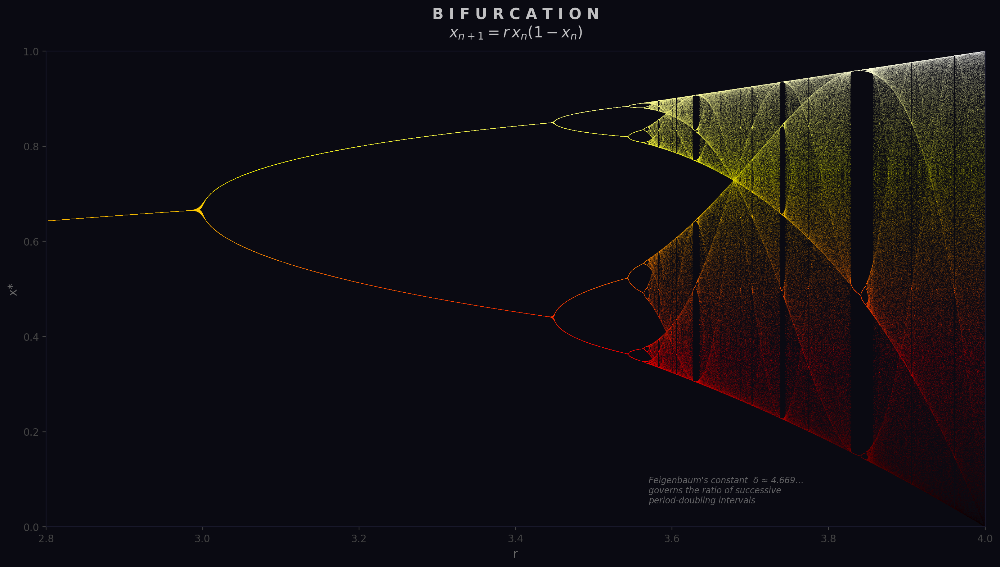
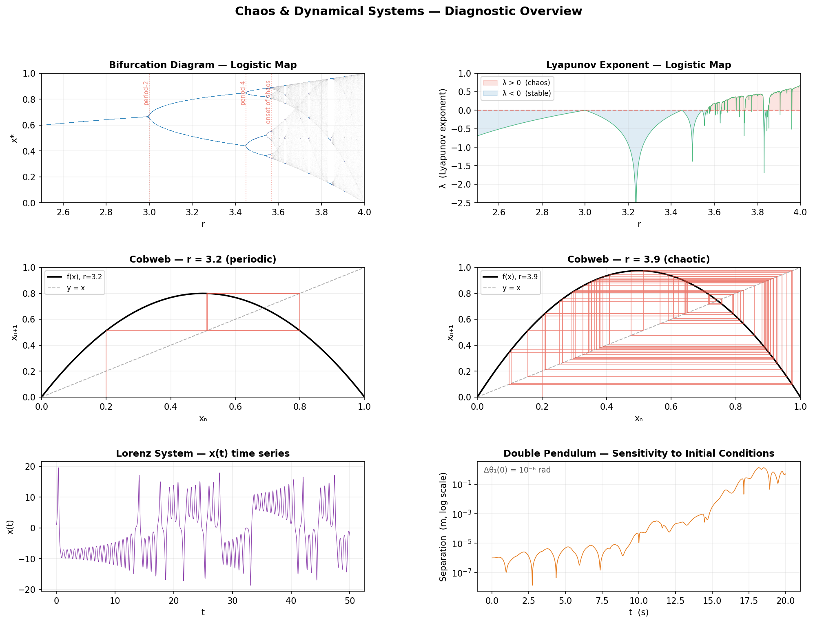
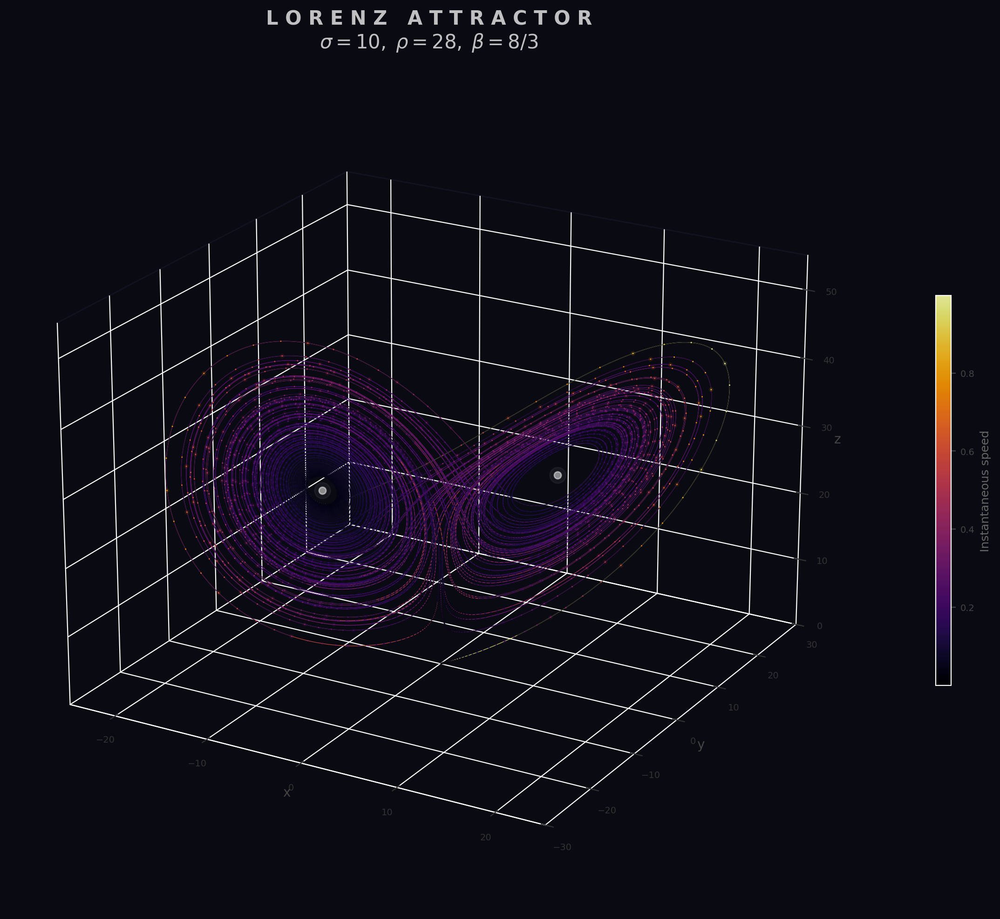
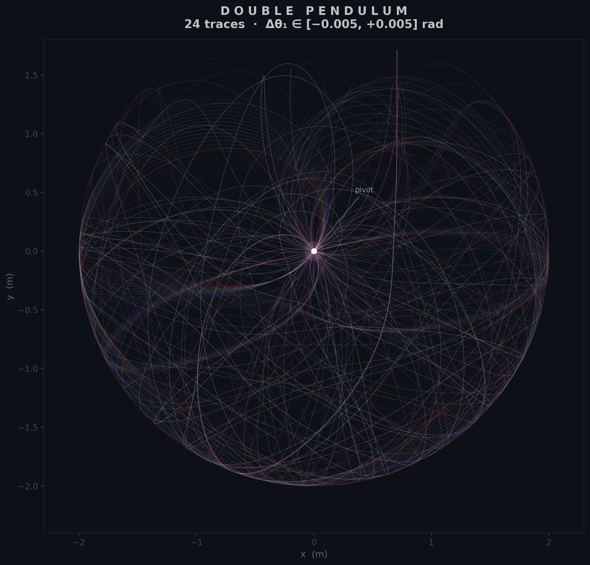

Chaos & Dynamical Systems
A deterministic system is chaotic when its long-term behaviour depends sensitively on initial conditions: two trajectories starting arbitrarily close will diverge exponentially in time. Chaos does not require randomness or high dimensionality — it can emerge from the simplest nonlinear maps and low-order ODEs.
6.1 The Logistic Map
The logistic map is the simplest discrete dynamical system that exhibits the full transition from stable fixed points to periodic orbits to chaos. Starting from an initial value $x_0 \in (0,1)$, iterate:
The parameter $r$ controls the dynamics. For $r < 1$ the population dies out. For $1 < r < 3$ the iterates converge to a stable fixed point $x^* = 1 - 1/r$. At $r = 3$ the fixed point loses stability and the system begins oscillating between two values — a period-doubling bifurcation. Further period doublings occur in rapid succession: period 4 near $r \approx 3.449$, period 8 near $r \approx 3.544$, and so on, accumulating at $r_\infty \approx 3.5699$ where the map becomes chaotic.
A cobweb diagram visualises iteration graphically: plot $f(x) = rx(1-x)$ together with the diagonal $y = x$, then trace a staircase from $(x_n, x_n)$ vertically to $(x_n, f(x_n))$ and horizontally to $(f(x_n), f(x_n))$. The staircase spirals inward toward a fixed point when the orbit is stable and bounces erratically when chaotic.
6.2 Bifurcation Diagram
The bifurcation diagram plots the long-term iterates of the logistic map (after discarding transients) against the parameter $r$. It reveals the period-doubling cascade at a glance: a single branch that splits into two at $r = 3$, four near $r \approx 3.449$, and so on until the branches merge into a dense chaotic band beyond $r_\infty$.
Feigenbaum discovered that the ratio of successive bifurcation intervals converges to a universal constant:
This constant is universal — it appears in any unimodal map undergoing period doubling, not just the logistic map.


6.3 Lyapunov Exponents
The Lyapunov exponent quantifies the average rate at which nearby orbits diverge (or converge). For a one-dimensional map $x_{n+1} = f(x_n)$ it is defined as:
When $\lambda < 0$ perturbations shrink and the orbit is stable; when $\lambda > 0$ nearby trajectories separate exponentially and the system is chaotic. The boundary $\lambda = 0$ corresponds to marginal stability (bifurcation points). For the logistic map with $r > r_\infty$ the exponent is positive almost everywhere, confirming chaos — though it dips negative inside periodic windows.
For higher-dimensional systems there is one Lyapunov exponent per dimension; chaos requires at least one positive exponent. The Lorenz system, for example, has one positive, one zero (along the flow), and one negative exponent.
6.4 Lorenz Attractor
In 1963 Edward Lorenz discovered that a drastically simplified model of atmospheric convection exhibits sensitive dependence on initial conditions. The system is defined by three coupled ODEs:
With the classic parameters $\sigma = 10$, $\rho = 28$, $\beta = 8/3$, trajectories are attracted to a butterfly-shaped set of zero volume in phase space — a strange attractor. The attractor is fractal: it has a non-integer dimension of approximately 2.06. Trajectories never repeat and never escape, yet two solutions starting a tiny distance apart diverge exponentially while remaining bounded on the attractor.

6.5 Double Pendulum
The double pendulum — two rigid rods connected end-to-end, swinging under gravity — is a canonical physical system that exhibits chaos. Its equations of motion are derived from the Lagrangian and involve coupled second-order nonlinear ODEs in the two angles $\theta_1$ and $\theta_2$.
At small amplitudes the motion is quasi-periodic and predictable. At larger amplitudes the system becomes chaotic: two pendulums released from initial angles differing by as little as $10^{-6}$ radians will follow nearly identical paths for a time, then abruptly diverge into completely different trajectories. This exponential sensitivity makes long-term prediction impossible despite the system being fully deterministic.
